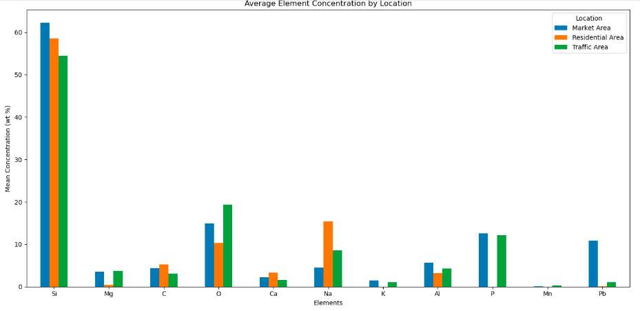
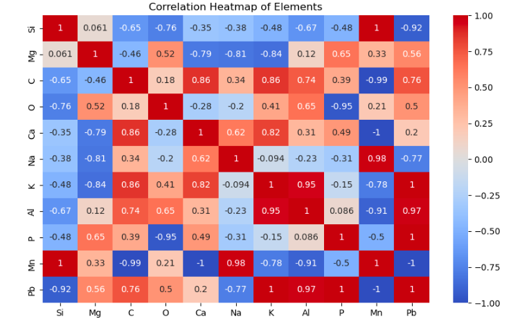

Overview
This project analyzes ambient air quality in Badagry, a peri-urban area in Lagos State, Nigeria, by examining PM₁₀ (Particulate Matter ≤ 10μm) using geochemical data obtained through SEM-EDX analysis. The objective is to identify dominant airborne pollutants and assess the potential health risks in different environmental units.
Description
The dataset contains PM₁₀ concentration values (in weight %) of elements from the three sample locations:
- Market Area
- Residential Area
- Traffic Area
Analytical Approach
The analysis was done using Python, primarily in Jupyter Notebook. Dataset was loaded and cleaned using pandas, with missing values handled and numeric conversions applied. Exploratory data analysis included grouped statistics per location and inter-element correlations. Visualizations were generated using matplotlib and seaborn to highlight concentration trends and pollution patterns across the three environmental zones.
Results
The traffic area recorded the highest Lead (Pb) concentrations, indicating pollution from vehicles. Quartz (Si) and aluminosilicates (Al-Si-O) particles dominate the PM₁₀ across all zones. The market area also had elevated levels of heavy metals, exposing traders and consumers to potential health risks.
Environmental Implications
The study confirms the presence of harmful airborne particles with geochemical signatures consistent with road dust, vehicular emissions and anthropogenic activities, which can be linked to respiratory issues such as silicosis and heavy metal poisoning.
Recommendations
- Regular air quality monitoring in high-traffic and market areas.
- Public health awareness campaigns about PM₁₀ exposure.
- Implementing cleaner transport policies and environmental regulations.
Preview
 You can check out the Notebook here